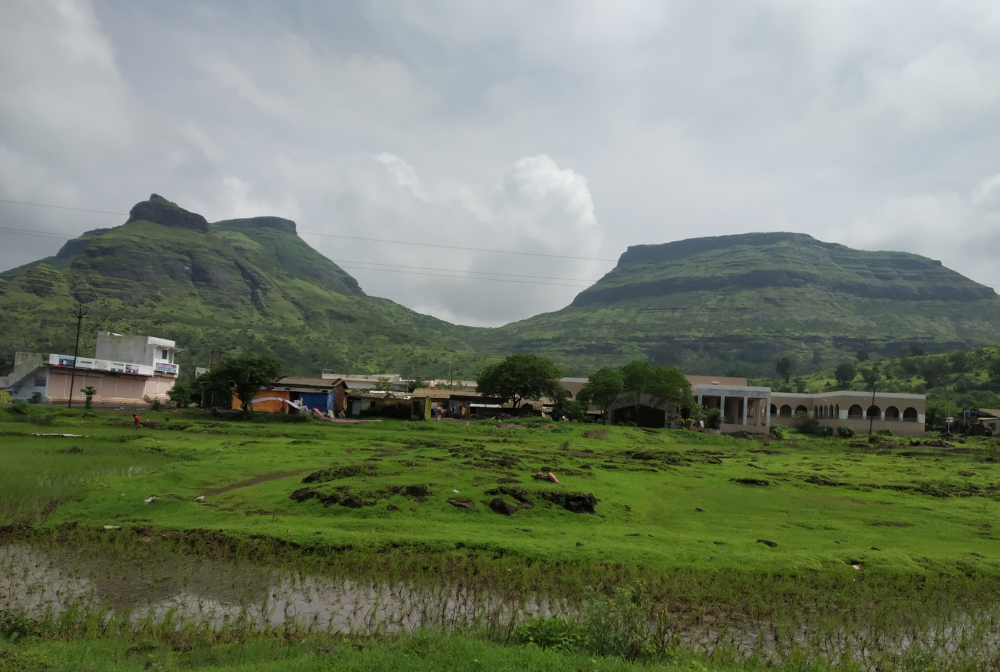
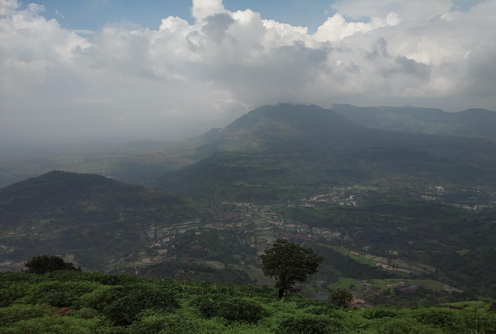
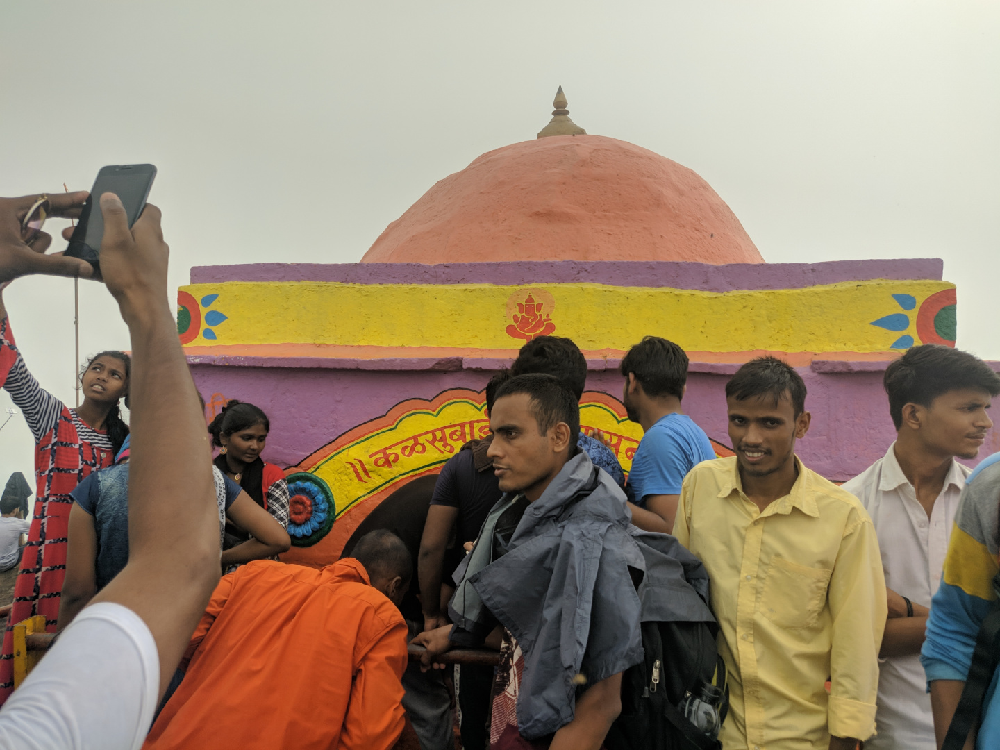

Kalsubai Peak: First Monsoon Trek in the Sahyadris
This is a brief account of my first trek in the Sahyadri range to the Kalsubai peak. Should you wish to skip reading the main content, please go to the end of the post where you will find key details about the trek.
What a day to cherish! If I could summarize it in one line, it would be:
When a 2815 feet plan fails, go for the 5400 feet one.
I was experiencing the monsoon season in Mumbai for the first time when I got to know that one of the most popular activities at this time of the year are the monsoon treks to the Western Ghats. Hailing from the foothills of the Himalayas, the idea trigged a lot of excitement but these treks are not the same as we do in my place. The terrain and the trekking conditions were quite different here. When I googled about them and saw the pictures, I couldn’t wait to plan a trek to Mahuli Fort.
On Sunday, 21st July 2019, two of my friends and I boarded the 5:00 AM local train from CST to Asangaon. We had a route planned but things didn’t work out we had foreseen. The Mahuli Fort trek route was temporarily closed due to unknown reasons. By 8:00 AM, we were back at the Asangaon station. The lush greenery all around didn’t let our excitement die down and we started to figure out other alternatives.
The Mahuli Fort trek was a result of a lot of research about other treks near Mumbai. Suddenly it came to us that we can attempt to scale the highest peak of Maharashtra - Kalsubai peak. According to all the blogs, articles, and other travel websites I had came across, it was too difficult to do the full trek if we were to start at 9:00 AM. Anyway, we went ahead with our half-baked plan.
We got a general-class ticket from Asangaon to Igatpuri and hopped in the next passenger train. If you are ever in this situation, deboard at Ghoti (the next station to Igatpuri). The entire train route is a mesmerising view with greenery all around.
We had to book an auto-rickshaw from Igatputi to Ghoti. Ghoti is the actual place where you can easily get public transport for the Kalsubai trek’s base point - Bari village. Getting a seat in that stuffed taxi was horrible but again the view outside was there to always comfort the eyes. Finally, we began on foot from the trek’s base point at around 12:15 PM. Since now I’ve done that, I can divide the entire trek in three fairly equal portions.
The first part was really fun and easy with meadows and streams. Although, due to very less tree cover in the entire trek, it was slightly uncomfortable to walk due to humidity. As we reached the end of the first part, the charm of the monsoom trek began - the rain. Just a word of caution (which you probably have guessed already) - travel light and keep your electronic gadgets in a waterproof bag. Umbrellas won’t be of any use rather they will slow you down. The best thing is to get a raincoat or simply a poncho and you are good to go. We stopped in between to rehydrate ourselves. There were lemonade stalls all along the first part of the journey.

A view of the Western Ghat plateaus.
The second part was more challenging than the first. The path becomes steeper and the rains make it quite slippery so make sure to wear a good pair of shoes that offer a good grip. The people around us kept the enthusiasm level high with music and slogans (yeah, it was really crowded for it’s one of the most popular treks in the Sahyadris). Then came the one of the most challenging tasks - To climb two rusted, half-broken iron ladders. Be very careful while crossing them as you don’t want any nicks and cuts that can serve as a breeding ground for infections, specially in that humid conditions.

A view from somewhere in the middle of the trek.
The third part is probably the steepest and it also has the final iron ladder (again, not in a good condition). We could feel the exhaustion as we were climibing up and it was not too late when we realised that our shoes weren’t meant for this terrain. We were stuggling to walk through the slippery jungle floor. The last part also has a couple of stalls which serve hot beverages, boiled/roasted corn, and lemonade. At about 3:30 PM we made it to the peak. There is a small temple dedicated a local lady named ‘Kalsubai’. Luckily, there was no cloud cover and we were able to see a panoramic view of the villages at the base.

Kalsubai’s temple at the summit.
After relishing our efforts for about half-an-hour, we began our descent, which I was even more difficult than climbing. I could hardly take a step without slipping which could have been real risky. By 5:30 PM, we were at the base again where the fun part of the trek ended but was more of struggle to come. It was getting dark and getting back to Mumbai was now the primary concern. We were told by a local shop owner that it will be difficult to find taxis at this time but there was a state transport at 6:30 PM which will go upto Kasara railway station. The bus arrived and we somehow managed to get in. It was hell crowded. From Kasara, we got a local train till CST and got back to our flat at around 1:30 AM. That sudden change of plan in the morning led to a painstaking journey but at the end, climbing the highest peak of Maharashtra was a beautiful and a must-have experience. :)
Key details about Kalsubai Trek
- Altitude: 5400 feet (1646 meters)
- Difficulty level: Moderate
- Best time to visit: Day treks in the monsoon season, night treks in the winter season
- Click here to see the location
- Places to see nearby: Igatpuri, Bhandardara (However, including these places in your itinerary will no longer keep it a one-day thing)
How to get there
Onwards journey
- If you have your own vehicle, you can directly go to the base point of the trek - Bari village
- By local train: Take the early morning Mumbai local train to get to Kasara (last stop in the central line) and you can find a local bus or hire a private taxi to Bari village
- By passenger train: Reach Igatpuri/Ghoti and get a local bus or a taxi till the Bari village
Return journey
- You can follow the exact opposite route as above but if you don’t have your own conveyance, make sure you start returning from Bari village well before 6:00 PM. The later it gets, the more difficult it might be to find a taxi or a bus.
Thanks for reading! Feel free to write to me if you have any queries or wish to share your experience.